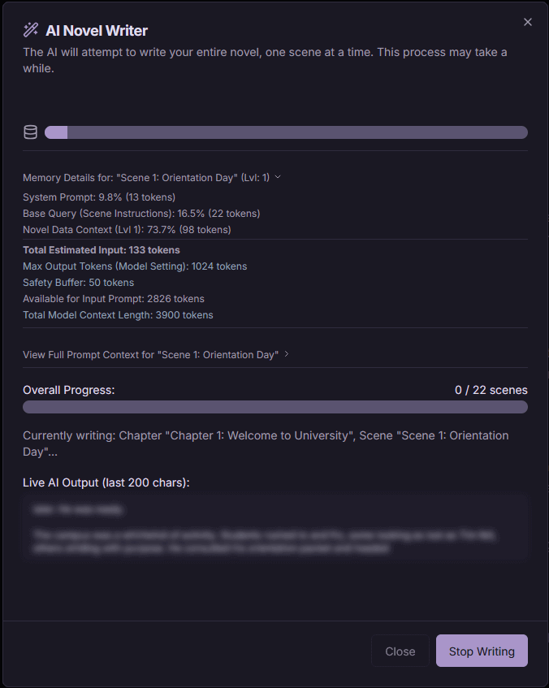
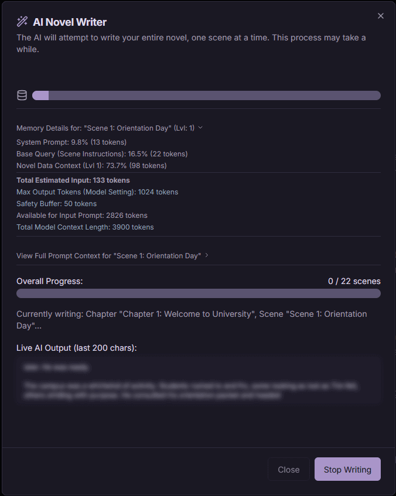

Funktionen
Umfassende Romanübersicht & Planung
Visualisiere die Struktur deines Romans auf einen Blick. Verwalte Akte, Kapitel und Szenen mit einer intuitiven Planungsoberfläche. Verknüpfe Story-Elemente und halte deinen Plot organisiert.
- Zentrales Romanverwaltungsraster.
- Hierarchische Story-Planung (Akte, Kapitel, Szenen).
- Detaillierte Romaninformationen: Synopsis, Autor, Cover.
- Importiere Story-Outlines aus Textdateien.


Reichhaltiges Konzeptmanagement & Fokussiertes Schreiben
Organisiere alle Bausteine deiner Geschichte – Charaktere, Orte, Lore und mehr – an einem Ort. Tauche dann in eine ablenkungsfreie Schreibumgebung ein, die für Konzentration entwickelt wurde, mit hilfreichen Werkzeugen wie Markdown-Unterstützung und einfacher Navigation.
- Verwalte einfach alle deine Story-Elemente wie Charaktere, Orte und Lore.
- Schreibe deine Geschichte Szene für Szene mit einem flexiblen Editor mit Markdown-Unterstützung für Formatierungen.
- Genieße einen nahtlosen Schreibfluss mit Textbereichen, die mit deinem Inhalt wachsen, und integrierter Formatierungshilfe.
- Springe mit einem intuitiven Gliederungsnavigator schnell zu jedem Teil deines Romans.
Tiefe Anpassung & Lokale Daten
Passe Plotbunni mit umfangreichen Theme-Optionen an deine Vorlieben an, einschließlich Hell-/Dunkelmodi, Voreinstellungen und individueller Farbanpassung. Alle deine Daten bleiben sicher und offline zugänglich, lokal in deinem Browser gespeichert.
- Heller, Dunkler und System-Theme-Modus.
- Vordefinierte Theme-Voreinstellungen (Sepia, Papier usw.).
- Volle Kontrolle über individuelle Theme-Farben.
- Lokale Datenspeicherung über IndexedDB für Offline-Zugriff.
- Exportiere Romanprojekte (JSON) und Inhalte (Markdown, Text, PDF).
Intelligente KI-Unterstützung
Überwinde Schreibblockaden mit KI-gestützten Vorschlägen für Szenen-Synopsen, Gliederungen, Beschreibungen und vollständige Szenentexte. Konfiguriere KI-Modelle und Prompts nach deinen Bedürfnissen.
- Kontextbezogene KI-Textvorschläge.
- KI-Romanautor zum Entwerfen ganzer Abschnitte.*
- Anpassbare KI-Endpunktprofile und Prompts.
- Live-Streaming von KI-Vorschlägen.
*Der KI-Romanautor ist experimentell und am besten für schnelles Prototyping geeignet.

 
